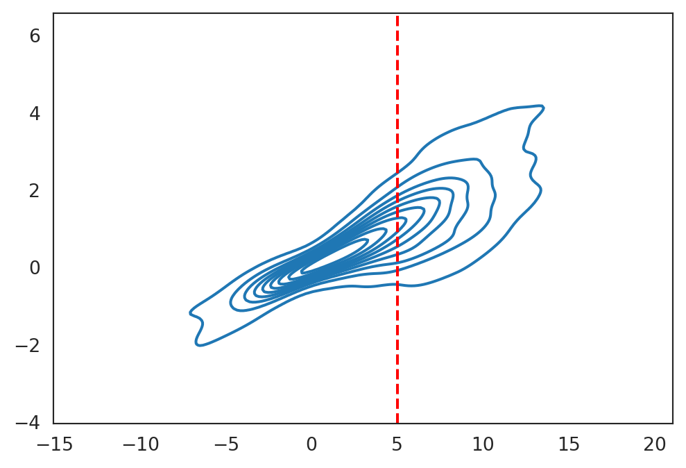
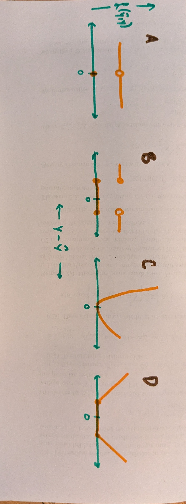
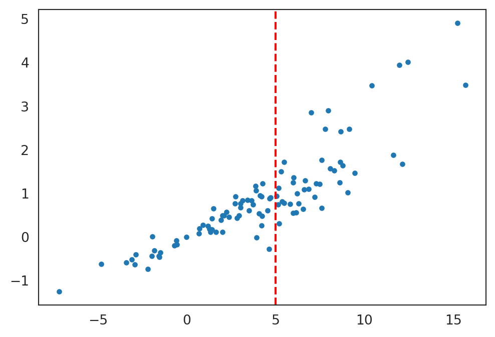

Linear regression in an ML setting
Goals
- Express ordinary least squares as loss minimization for IID data
- Discuss the advantages (but arbitrariness) of squared error
- Compare empirical and population losses
- Show consistency of OLS when we can use the LLN
Ordinary least squares under misspecification
Suppose we observe IID data,
\[ \mathcal{D}:= \left\{ (\boldsymbol{x}_n, y_n) \textrm{ for }n=1,\ldots,N \right\}. \]
Later, we expect to observe one (or more) values \(\boldsymbol{x}_\mathrm{new}\), but not the corresponding \(y_\mathrm{new}\). We’ll assume (tentatively) that the pair \((\boldsymbol{x}_\mathrm{new}, y_\mathrm{new})\) come from the same distribution as the data, and are independent of the data. But for now, let’s think about the OLS estimator,
\[ \hat{\boldsymbol{\beta}}= (\boldsymbol{X}^\intercal\boldsymbol{X})^{-1} \boldsymbol{X}^\intercal\boldsymbol{Y} \]
under the assumption only of IID pairs of \((x_n, y_n)\) and that certain moments exist (specifically that all covariances are finite, and \(x_n\) has an invertible covariance matrix, but we won’t worry too much about technical conditions for now).
You might be used to making an assumption about \(y_n\) that looks something like
\[ y_n = {\boldsymbol{\beta}_{\mathrm{true}}}^\intercal\boldsymbol{x}_n + \varepsilon_n \textrm{ for }\varepsilon_n \overset{\mathrm{IID}}{\sim}\mathcal{N}\left(0,\sigma^2\right) \quad \leftarrow \textrm{ We do not assume this!} \]
Now we have no such assumption! In particular, there is no “true” \(\boldsymbol{\beta}_{\mathrm{true}}\) to estimate. We can still define mean zero “residuals” as
\[ \varepsilon_n := y_n - \mathbb{E}_{\vphantom{}}\left[y| \boldsymbol{x}_n\right] \quad\Leftrightarrow\quad y_n = \mathbb{E}_{\vphantom{}}\left[y| \boldsymbol{x}_n\right] + \varepsilon_n, \]
but there is no reason to believe the function \(\mathbb{E}_{\vphantom{}}\left[y| \boldsymbol{x}_n\right]\) is linear in \(\boldsymbol{x}_n\). We might say that our regression model is misspecified in the sense the we are fitting a model of the form that does not match the actual process that generated the data.
Some things that you may have learned about OLS in introductory classes are no longer true under misspecification. The big one is the (now fals) assertion that \(\hat{\boldsymbol{\beta}}\sim \mathcal{N}\left(\boldsymbol{\beta}_{\mathrm{true}}, \sigma^2 (\boldsymbol{X}^\intercal\boldsymbol{X})^{-1}\right)\). There are a lot of things wrong with this one:
- There is no such thing as \(\boldsymbol{\beta}_{\mathrm{true}}\)
- There is no reason to think that \(\mathrm{Var}_{\,}\left(\varepsilon_n\right)\) is a constant \(\sigma^2\) that does not depend on \(\boldsymbol{x}_n\) (heteroskedasticity)
- This derivation relies on \(\varepsilon_n\) being normal, but \(\varepsilon_n\) can have essentially any distribution (we assume it has finite variance though)
- \(\boldsymbol{X}\) is actually random here (they too are IID), and so it cannot be a parameter in a distribution. (Typically this formula is derived conditional on \(\boldsymbol{X}\).)
Similarly, you might have learned that “OLS is unbiased,” meaning \(\mathbb{E}_{\vphantom{}}\left[\hat{\boldsymbol{\beta}}\right] = \boldsymbol{\beta}_{\mathrm{true}}\). This no longer makes sense, again because there is no \(\boldsymbol{\beta}_{\mathrm{true}}\). But even the predictions are biased. Taking \(\hat{\boldsymbol{Y}}:= \boldsymbol{X}\hat{\boldsymbol{\beta}}\), we see that
\[ \mathbb{E}_{\vphantom{}}\left[\hat{\boldsymbol{Y}}\right] = \mathbb{E}_{\vphantom{}}\left[\boldsymbol{X}(\boldsymbol{X}^\intercal\boldsymbol{X})^{-1} \boldsymbol{X}^\intercal\boldsymbol{Y}\right] = \mathbb{E}_{\vphantom{}}\left[\boldsymbol{X}(\boldsymbol{X}^\intercal\boldsymbol{X})^{-1} \boldsymbol{X}^\intercal\mathbb{E}_{\vphantom{}}\left[\boldsymbol{Y}| \boldsymbol{X}\right]\right], \]
which does not equal \(\mathbb{E}_{\vphantom{}}\left[\boldsymbol{Y}\right]\) in general. It’s even worse: the expectation of \(\hat{y}_{\mathrm{new}}\) at an IID draw \(\boldsymbol{x}_{\mathrm{new}}\) is not unbiased either:
\[ \mathbb{E}_{\vphantom{}}\left[\hat{y}_{\mathrm{new}}\right] = \mathbb{E}_{\vphantom{}}\left[\boldsymbol{x}_{\mathrm{new}}^\intercal\hat{\boldsymbol{\beta}}\right] = \mathbb{E}_{\vphantom{}}\left[\boldsymbol{x}_{\mathrm{new}}\right]^\intercal\mathbb{E}_{\vphantom{}}\left[(\boldsymbol{X}^\intercal\boldsymbol{X})^{-1} \boldsymbol{X}^\intercal\boldsymbol{Y}\right], \]
and since the rightmost expression is no longer a true \(\boldsymbol{\beta}_{\mathrm{true}}\), this has no guaranteed relation to \(\mathbb{E}_{\vphantom{}}\left[y_{\mathrm{new}}\right]\).
So what can we say? Assuming covariances are finite, we can apply a LLN, so that
\[ \frac{1}{N} \boldsymbol{X}^\intercal\boldsymbol{X}\rightarrow \mathbb{E}_{\vphantom{}}\left[\boldsymbol{x}\boldsymbol{x}^\intercal\right] \quad\textrm{and}\quad \frac{1}{N} \boldsymbol{X}^\intercal\boldsymbol{Y}\rightarrow \mathbb{E}_{\vphantom{}}\left[\boldsymbol{x}y\right], \]
and so (by the continuous mapping theorem if \(\mathbb{E}_{\vphantom{}}\left[\boldsymbol{x}\boldsymbol{x}^\intercal\right]\) is invertible),
\[ \hat{\boldsymbol{\beta}}\rightarrow \mathbb{E}_{\vphantom{}}\left[\boldsymbol{x}\boldsymbol{x}^\intercal\right]^{-1} \mathbb{E}_{\vphantom{}}\left[\boldsymbol{x}y\right]. \]
This is a mysterious expression. In order to give it meaning, let us consider the more general problem of empirical risk minimization. We will see at the end that this is actually quite a good quantity for \(\hat{\boldsymbol{\beta}}\) to converge to.
Regression as risk minimization
Let us step back. Ultimately, we want to guess \(y_\mathrm{new}\), for which we want a function \(f(\boldsymbol{x}_\mathrm{new})\). We hope \(\hat{y}_\mathrm{new}:= f(\boldsymbol{x}_\mathrm{new})\) is “close” to \(y_\mathrm{new}\).
What does “close” mean? There are many choices for measuring a “distance” between \(\hat{y}_\mathrm{new}\) and \(y_\mathrm{new}\). Here are a few:
- \(|\hat{y}_\mathrm{new}- y_\mathrm{new}|\)
- \(|\hat{y}_\mathrm{new}- y_\mathrm{new}|^2\)
- \(|\hat{y}_\mathrm{new}- y_\mathrm{new}|^4\)
- \(\exp\left(|\hat{y}_\mathrm{new}- y_\mathrm{new}|\right)\)
- \(\mathrm{I}\left(|\hat{y}_\mathrm{new}- y_\mathrm{new}| > 1\right)\)
- \(\mathrm{I}\left(|\hat{y}_\mathrm{new}- y_\mathrm{new}| \ne 0\right)\)
Notation
In this course, \(\mathrm{I}\left(z\right)\) will always be the “indicator function” taking value \(0\) when \(z\) is false and \(1\) when \(z\) is true.
Exercise
Describe in ordinary language the implications of using each of the following loss functions.

Whichever one we choose, we’ll define the “loss” of guessing \(\hat{y}\) when the true value was is \(y\) as \[ \mathscr{L}(\hat{y}, y) = \mathscr{L}(f(\boldsymbol{x}), y) \]
We want to find \(f(\cdot)\) so that \(\mathscr{L}(f(\boldsymbol{x}), y)\) is as small as possible. But the loss for a particular \(f\) may depend on \(\boldsymbol{x}_\mathrm{new}\), since different \(\boldsymbol{x}_\mathrm{new}\) are associated with different distributions of \(y_\mathrm{new}\). It follows that it doesn’t make sense to minimize the loss — instead we want to minimize the risk,
\[ \begin{aligned} \mathscr{R}(f) :=& \mathbb{E}_{\vphantom{}}\left[\mathscr{L}(f(\boldsymbol{x}), y)\right] & \textrm{(Risk)}. \end{aligned} \]
Warning
In optimization, the quantity you minimize is commonly called a “loss function”. Here, we use the term “loss function” in the ML sense to measure the discrepancy between a prediction and the truth. Then we take an empirical or population average to form a risk, which in turn becomes a “loss function” in the optimization sense when we try to minimize it. This double use of “loss” is as ubiquitous as it is unfortunate. All we can do is be aware of it and keep an eye on the context to avoid abiguity.
So we would like to find
\[ f^{\star}(\cdot) := \underset{f}{\mathrm{argmin}}\, \mathscr{R}(f) = \underset{f}{\mathrm{argmin}}\, \mathbb{E}_{\vphantom{}}\left[\mathscr{L}(f(\boldsymbol{x}), y)\right]. \]
Notation
The \(\underset{\,}{\mathrm{argmin}}\,\) operator finds the argument that minimizes a function, as opposed to the actual minimum, which is returned by \(\min{\,}\). For example
\[ \min{x}{(x - 3)^2 + 4} = 4 \quad\textrm{and}\quad \underset{x}{\mathrm{argmin}}\,{(x - 3)^2 + 4} = 3, \]
since the function \((x - 3)^2 + 4\) is minimized at the \(\underset{\,}{\mathrm{argmin}}\,\) value \(x= 3\), at which point it takes the \(\min{\,}\) value \(4\).
Notation
The notation \((\cdot)\) in \(f^{\star}(\cdot)\) emphasizes that the object \(f^{\star}\) is a function. At times I may omit it and simply write \(f^{\star}\) (for example). In contrast, I will (try) to write \(f^{\star}(x)\) only for the function \(f^{\star}\) evaluated at a particular value \(x\).
The problem with this definition of \(f^{\star}\) is that we don’t actually know how to compute \(\mathscr{R}(f)\), since we don’t know the joint distribution of \(\boldsymbol{x},y\). In this class, we will extensively use and study the empirical risk,
\[ \hat{\mathscr{R}}(f) := \frac{1}{N} \sum_{n=1}^N\mathscr{L}(f(\boldsymbol{x}_n), y_n). \]
By the law of large numbers, for any particular \(f\), we might expect that \(\hat{\mathscr{R}}(f) \approx \mathscr{R}(f)\):
\[ \hat{\mathscr{R}}(f) \rightarrow \mathscr{R}(f) \quad\textrm{for a particular $f$, by the LLN}. \]
But that is not enough, since what we want is for
\[ \underset{f}{\mathrm{argmin}}\, \hat{\mathscr{R}}(f) \approx \underset{f}{\mathrm{argmin}}\, \mathscr{R}(f). \]
For example, what if \(\mathscr{R}(f') = \mathscr{R}(f)\), but, at a particular \(N\), \(\hat{\mathscr{R}}(f')\) is systematically lower than \(\hat{\mathscr{R}}(f)\)? This can happen when the function \(f'\) overfits the randomness in the dataset at hand.
One of the key themes of statistical machine learning, and of this class, is when and why \(\hat{\mathscr{R}}\) is an appropriate proxy for \(\mathscr{R}\).
Linear regression and least squares loss
For the next few lectures, we will focus on least squares loss \(\mathscr{L}(\hat{y}, y) = (\hat{y}- y)^2\). This loss does not always reflect what we really want, but it is extremely computationally and analytically tractable, and so widely used.
Given some \(\boldsymbol{x}_\mathrm{new}\), we want to find a best guess \(f(\boldsymbol{x}_\mathrm{new})\) for the value of \(y_\mathrm{new}\): specifically, we want to find a function that minimizes the risk
\[ f^{\star}(\cdot) := \underset{f}{\mathrm{argmin}}\, \mathscr{R}(f) = \underset{f}{\mathrm{argmin}}\, \mathbb{E}_{\vphantom{}}\left[\mathscr{L}(f(\boldsymbol{x}_\mathrm{new}), y_\mathrm{new})\right] = \underset{f}{\mathrm{argmin}}\, \mathbb{E}_{\vphantom{}}\left[\left( y_\mathrm{new}- f(\boldsymbol{x}_\mathrm{new}) \right)^2\right]. \]
This is a functional optimization problem over an infinite dimensional space! You can solve this using some fancy math, but you can also prove directly that the best choice is
\[ f^{\star}(\boldsymbol{x}_\mathrm{new}) = \mathbb{E}_{\vphantom{}}\left[y_\mathrm{new}| \boldsymbol{x}_\mathrm{new}\right]. \]
Suppose we consider any other function \(f(\cdot)\). The loss is larger, since
\[ \begin{aligned} \mathbb{E}_{\vphantom{}}\left[\left( y_\mathrm{new}- f(\boldsymbol{x}_\mathrm{new}) \right)^2\right] ={}& \mathbb{E}_{\vphantom{}}\left[ \mathbb{E}_{\vphantom{}}\left[\left( y_\mathrm{new}- f(\boldsymbol{x}_\mathrm{new}) \right)^2 | \boldsymbol{x}_\mathrm{new}\right] \right] &\textrm{(Tower property)} \\={}& \mathbb{E}_{\vphantom{}}\left[ \mathbb{E}_{\vphantom{}}\left[\left( y_\mathrm{new}- f^{\star}(\boldsymbol{x}_\mathrm{new}) + f^{\star}(\boldsymbol{x}_\mathrm{new}) - f(\boldsymbol{x}_\mathrm{new}) \right)^2 | \boldsymbol{x}_\mathrm{new}\right] \right] &\textrm{(add and subtract)} \\={}& \mathbb{E}_{\vphantom{}}\left[\left( y_\mathrm{new}- f^{\star}(\boldsymbol{x}_\mathrm{new}) \right)^2\right] + \\& \mathbb{E}_{\vphantom{}}\left[\left( f^{\star}(\boldsymbol{x}_\mathrm{new}) - f(\boldsymbol{x}_\mathrm{new}) \right)^2\right] + \\& 2 \mathbb{E}_{\vphantom{}}\left[ \mathbb{E}_{\vphantom{}}\left[y_\mathrm{new}- f^{\star}(\boldsymbol{x}_\mathrm{new}) | \boldsymbol{x}_\mathrm{new}\right] \left( f^{\star}(\boldsymbol{x}_\mathrm{new}) - f(\boldsymbol{x}_\mathrm{new}) \right) \right] &\textrm{(expand the quadratic, use conditioning)} \\={}& \mathbb{E}_{\vphantom{}}\left[\left( y_\mathrm{new}- f^{\star}(\boldsymbol{x}_\mathrm{new}) \right)^2\right] + \\& \mathbb{E}_{\vphantom{}}\left[\left( f^{\star}(\boldsymbol{x}_\mathrm{new}) - f(\boldsymbol{x}_\mathrm{new}) \right)^2\right] & \textrm{($\mathbb{E}_{\vphantom{}}\left[y_\mathrm{new}- f^{\star}(\boldsymbol{x}_\mathrm{new}) | \boldsymbol{x}_\mathrm{new}\right]=0$ by definition)} \\\ge& \mathbb{E}_{\vphantom{}}\left[\left( y_\mathrm{new}- f^{\star}(\boldsymbol{x}_\mathrm{new}) \right)^2\right]. & \textrm{(anything squared is greater than $0$)} \end{aligned} \]
Approximating the conditional expectation
We now know that the optimal regression function is given by \(f^{\star}(\boldsymbol{x}) = \mathbb{E}_{\vphantom{}}\left[y| \boldsymbol{x}\right]\). The problem is how to estimate it.
We have been imagining that we know the full joint distribution of \(\boldsymbol{x}\) and \(y\). In that case, we can read off the conditional distribution by “slicing” through a particular \(\boldsymbol{x}\):
However, in practice, we don’t actually observe the full joint distribution, we observe data points. How should we proceed?

Linear approximation
Typically, we don’t know the functional form of \(\mathbb{E}_{\vphantom{}}\left[y| \boldsymbol{x}\right]\), because we don’t know the joint distribution of \(\boldsymbol{x}\) and \(y\). But suppose we approximate it with
\[ \mathbb{E}_{\vphantom{}}\left[y| \boldsymbol{x}\right] \approx \boldsymbol{\beta}^\intercal\boldsymbol{x}. \]
Note that we are not assuming this is true — we do not expect that \(\mathbb{E}_{\vphantom{}}\left[y| \boldsymbol{x}\right]\) is a linear function of \(\boldsymbol{x}\). Rather, we are finding the best approximation to the unknown \(\mathbb{E}_{\vphantom{}}\left[y_\mathrm{new}| \boldsymbol{x}_\mathrm{new}\right]\) amongst the class of functions of the form \(\boldsymbol{\beta}^\intercal\boldsymbol{x}_\mathrm{new}\).
The linear assumption gives us a finite–dimensional class of candidate functions, which gives us a tractable optimization problem. Under this approximation, the problem becomes \[ \begin{aligned} \beta^{*}:={}& \underset{\beta}{\mathrm{argmin}}\, \mathbb{E}_{\vphantom{}}\left[\left( y- \boldsymbol{\beta}^\intercal\boldsymbol{x}\right)^2\right] \\ ={}& \underset{\beta}{\mathrm{argmin}}\, \left(\mathbb{E}_{\vphantom{}}\left[y^2\right] - 2 \boldsymbol{\beta}^\intercal\mathbb{E}_{\vphantom{}}\left[y\boldsymbol{x}\right] + \boldsymbol{\beta}^\intercal\mathbb{E}_{\vphantom{}}\left[\boldsymbol{x}\boldsymbol{x}^\intercal\right] \boldsymbol{\beta}\right). \end{aligned} \]
Differentiating with respect to \(\boldsymbol{\beta}\) and solving gives
\[ \boldsymbol{\beta}^{*}= \mathbb{E}_{\vphantom{}}\left[\boldsymbol{x}\boldsymbol{x}^\intercal\right] ^{-1} \mathbb{E}_{\vphantom{}}\left[\boldsymbol{x}y\right]. \]
Note that this is the limiting quantity for \(\hat{\boldsymbol{\beta}}\), the OLS estimator! We have shown that, as \(N \rightarrow \infty\),
\[ \hat{\boldsymbol{\beta}}\rightarrow \boldsymbol{\beta}^{*}. \]
That is, the OLS estimator converges to the best linear estimator of the risk function! That is, in fact, the best quantity you could hope for it to converge to.
This is not a coincidence, since \(\hat{\boldsymbol{\beta}}\) is minimizing an objective function that is closely related to \(\mathscr{R}(\boldsymbol{\beta})\). Note that we cannot actually compute \(\beta^{*}\) directly, since we still don’t know the joint distribution of \(\boldsymbol{x}\) and \(y\), and so cannot compute the preceding expectations. However, if we have a training set, we can approximate the expected loss:
\[ \hat{\mathscr{R}}(\boldsymbol{\beta}) := \frac{1}{N} \sum_{n=1}^N\mathscr{L}(\boldsymbol{\beta}^\intercal\boldsymbol{x}_n, y_n) = \frac{1}{N} \sum_{n=1}^N\left( y_n - \boldsymbol{\beta}^\intercal\boldsymbol{x}_n \right)^2. \]
For any particular \(\boldsymbol{\beta}\), \(\hat{\mathscr{R}}(\boldsymbol{\beta}) \rightarrow \mathscr{R}(\boldsymbol{\beta})\) by the LLN, so it might (tentatively) make sense to use \(\hat{\mathscr{R}}(\boldsymbol{\beta})\) as a proxy for \(\mathscr{R}(\boldsymbol{\beta})\). And of course, \(\hat{\boldsymbol{\beta}}:= \underset{\boldsymbol{\beta}}{\mathrm{argmin}}\, \hat{\mathscr{R}}(\boldsymbol{\beta})\), and since we have shown manually that \(\hat{\boldsymbol{\beta}}\rightarrow \boldsymbol{\beta}^{*}\), we see that \(\hat{\mathscr{R}}(\boldsymbol{\beta})\) is a good proxy for \(\mathscr{R}(\boldsymbol{\beta})\) in this particular case, in the sense that we learn a function, \(\hat{\boldsymbol{\beta}}^\intercal\boldsymbol{x}\), that converges, as \(N \rightarrow \infty\), to the best possible function in our function class: \(\hat{\boldsymbol{\beta}}^\intercal\boldsymbol{x}\rightarrow {\boldsymbol{\beta}^{*}}^\intercal\boldsymbol{x}\).
Regret minimization and basis expansions
We should not congratulate ourselves too hastily. After all, we would like to estimate \(f^{\star}(\boldsymbol{x}) = \mathbb{E}_{\vphantom{}}\left[y\vert \boldsymbol{x}\right]\), not the best linear estimator. As we will discuss in the next lecture, we can easily form new regression estimators out of old ones by regressing on non–linear transformations of \(\boldsymbol{x}\). For example, when \(x\) is a scalar, we could consider the following hierarchy of linear regressions:
\[ \begin{aligned} f_0(x; \beta) ={}& \beta_0 \\ f_1(x; \boldsymbol{\beta}) ={}& \beta_0 + \beta_1 x\\ f_2(x; \boldsymbol{\beta}) ={}& \beta_0 + \beta_1 x+ \frac{1}{2} \beta_2 x^2\\ \vdots{}&\\ f_K(x; \boldsymbol{\beta}) ={}& \sum_{k=1}^K \frac{1}{k!} \beta_k x^k. \end{aligned} \]
As \(K\) increases, \(f\) becomes arbitrarily expressive — in fact, it can express any piecewise continuous function on a compact domain! However, the corresponding \(\boldsymbol{\beta}\) become harder and harder to estimate. In fact, as long as \(x\) takes on \(N\) distinct values, when \(K > N\) the matrix \(\boldsymbol{X}\) is not full-rank, and \(\hat{\boldsymbol{\beta}}\) is not uniquely defined.
This observation motivates a key (potential) tradeoff between model expressivness and estimability. Like many things in machine learning, the tradeoff can be seen by adding and subtracting things to the risk. First, note that we only care about \(\boldsymbol{\beta}\) (or, in general, a function \(f\)) through the risk. In particular, we want to minimize the “regret,” or the difference from the optimal prediction function:
\[ \textrm{Regret}(f) := \mathscr{R}(f) - \mathscr{R}(f^{\star}) \ge 0. \]
In particular, suppose we fix a particular \(K\) and use the regression estimate \(\hat{f}_K(\boldsymbol{x}) = \sum_{k=1}^K \frac{1}{k!} \hat{\beta}_k x^k\). Letting \(f^*_K\) denote the minimizer of \(\mathscr{R}(\cdot)\) among functions of the form \(f_K(\cdot)\), the risk decomposes as
\[ \mathscr{R}(\hat{f}_K) - \mathscr{R}(f^{\star}) = \underbrace{\mathscr{R}(\hat{f}_K) - \mathscr{R}(f^{\star}_K)}_{\textrm{Estimation error $\ge 0$}} + \underbrace{\mathscr{R}(f^{\star}_K) - \mathscr{R}(f^{\star})}_{\textrm{Model bias $\ge 0$}}. \]
Each term is positive because (a) we cannot find the optimal \(f^{\star}_K\) and (b) the optimal \(f^{\star}_K\) is not, in general, equal to the true \(f^{\star}\).
This decomposition is useful because you might expect \(K\) to act in opposite directions in these two terms — large \(K\) makes the first harder, since you have more to estimate, but large \(K\) makes the second easier, since you are more likely to be able to express something close to the optimal \(f^{\star}\).
ULLN preview
Note that the above proof of the consistency of \(\hat{\boldsymbol{\beta}}\) used an explicit formula for \(\hat{\boldsymbol{\beta}}\). In this class, we will often discuss estimators for whom no explicit formula exists because we will find them via black–box optimization procedures. How can we reason in such cases?
Recall that we argued, for a particular \(f\), that a LLN should give
\[ \hat{\mathscr{R}}(f) \rightarrow \mathscr{R}(f). \]
For the OLS case, this expression is the same as
\[ \begin{aligned} \hat{\mathscr{R}}(\boldsymbol{\beta}) ={}& \frac{1}{N} \sum_{n=1}^N(\boldsymbol{x}_n^\intercal\boldsymbol{\beta}- y_n)^2 \\={}& \frac{1}{N} \sum_{n=1}^N\boldsymbol{\beta}^\intercal\boldsymbol{x}_n \boldsymbol{x}_n^\intercal\boldsymbol{\beta}- 2\frac{1}{N} \sum_{n=1}^N\boldsymbol{\beta}^\intercal\boldsymbol{x}_n y_n + \frac{1}{N} \sum_{n=1}^Ny_n^2 \\={}& \boldsymbol{\beta}^\intercal\left(\frac{1}{N} \sum_{n=1}^N\boldsymbol{x}_n \boldsymbol{x}_n^\intercal\right) \boldsymbol{\beta}- 2 \boldsymbol{\beta}^\intercal\left(\frac{1}{N} \sum_{n=1}^N\boldsymbol{x}_n y_n \right) + \frac{1}{N} \sum_{n=1}^Ny_n^2 \\\rightarrow{}& \boldsymbol{\beta}^\intercal\mathbb{E}_{\vphantom{}}\left[\boldsymbol{x}\boldsymbol{x}^\intercal\right] \boldsymbol{\beta}- 2 \boldsymbol{\beta}^\intercal\mathbb{E}_{\vphantom{}}\left[ \boldsymbol{x}y\right] + \mathbb{E}_{\vphantom{}}\left[y_n^2\right] \\={}& \mathbb{E}_{\vphantom{}}\left[(\boldsymbol{x}^\intercal\boldsymbol{\beta}- y)^2 \right] \\={}& \mathscr{R}(\boldsymbol{\beta}). \end{aligned} \]
Unfortunately, this does not translate directly into \(\hat{\boldsymbol{\beta}}\rightarrow \boldsymbol{\beta}^{*}\), since the preceding limit holds only for a fixed \(\boldsymbol{\beta}\). Different \(\boldsymbol{\beta}\) will lead to convergence at different rates, so in theory it may be the case that \(\underset{\boldsymbol{\beta}}{\mathrm{argmin}}\, \hat{\mathscr{R}}(\boldsymbol{\beta})\) does not converge to \(\underset{\boldsymbol{\beta}}{\mathrm{argmin}}\, \mathscr{R}(\boldsymbol{\beta})\).
Exercise
In the special case of linear regression, show explicitly that \(\hat{\mathscr{R}}(\hat{\boldsymbol{\beta}}) \rightarrow \mathscr{R}(\boldsymbol{\beta}^{*})\). What special structure of the problem permits this result so easily?
A useful decomposition is as follows:
\[ \begin{aligned} 0 \le \mathscr{R}(\hat{\boldsymbol{\beta}}) - \mathscr{R}(\boldsymbol{\beta}^{*}) ={} \mathscr{R}(\hat{\boldsymbol{\beta}}) - \hat{\mathscr{R}}(\hat{\boldsymbol{\beta}}) & \textrm{Difficult term!}\\ & + \hat{\mathscr{R}}(\hat{\boldsymbol{\beta}}) - \hat{\mathscr{R}}(\boldsymbol{\beta}^{*}) & \textrm{Negative term} \\ & + \hat{\mathscr{R}}(\boldsymbol{\beta}^{*}) - \mathscr{R}(\boldsymbol{\beta}^{*}) & \textrm{LLN term} \end{aligned} \]
We wish to bound the preceding equation by a quantity that goes to zero; if we do, then \(\mathscr{R}(\hat{\boldsymbol{\beta}}) - \mathscr{R}(\boldsymbol{\beta}^{*}) \rightarrow 0\).
The second term is negative, since \(\hat{\boldsymbol{\beta}}\) minimizes \(\hat{\mathscr{R}}\), and so \(\hat{\mathscr{R}}(\hat{\boldsymbol{\beta}}) \le \hat{\mathscr{R}}(\boldsymbol{\beta})\) for any \(\boldsymbol{\beta}\), and for \(\boldsymbol{\beta}^{*}\) in particular. So it is bounded above by zero, and we don’t need to consider it any further.
The third term goes to zero by the LLN, since \(\boldsymbol{\beta}^{*}\) is fixed.
However, the first “difficult” term does not necessarily go to zero by the LLN, since \(\hat{\boldsymbol{\beta}}\) is random and correlated with \(\hat{\mathscr{R}}\). Specifically, in
\[ \hat{\mathscr{R}}(\hat{\boldsymbol{\beta}}) = \frac{1}{N} \sum_{n=1}^N(y_n - \boldsymbol{x}_n^\intercal\hat{\boldsymbol{\beta}})^2, \]
the entries \((y_n - \boldsymbol{x}_n^\intercal\hat{\boldsymbol{\beta}})^2\) are not IID, since \(\hat{\boldsymbol{\beta}}\) depends on all the entries.
One standard way of dealing with terms of the form \(\hat{\mathscr{R}}(\hat{\boldsymbol{\beta}}) - \mathscr{R}(\hat{\boldsymbol{\beta}})\) is uniform laws of large numbers or ULLNs. For some compact set \(K\), a ULLN for this setting would state that a LLN holds uniformly over \(K\).
\[ \begin{aligned} \textrm{For a fixed }\boldsymbol{\beta}\textrm{, } \left|\hat{\mathscr{R}}(\boldsymbol{\beta}) - \mathscr{R}(\boldsymbol{\beta})\right| \rightarrow {}& 0 & \textrm{(LLN)} \\ \sup_{\beta \in K} \left|\hat{\mathscr{R}}(\boldsymbol{\beta}) - \mathscr{R}(\boldsymbol{\beta})\right| \rightarrow {}& 0 & \textrm{(ULLN)}. \end{aligned} \]
If a ULLN holds, and we believe that \(\hat{\boldsymbol{\beta}}\in K\), then
\[ \left|\mathscr{R}(\hat{\boldsymbol{\beta}}) - \hat{\mathscr{R}}(\hat{\boldsymbol{\beta}})\right| \le \sup_{\boldsymbol{\beta}\in K} \left|\mathscr{R}(\boldsymbol{\beta}) - \hat{\mathscr{R}}(\boldsymbol{\beta})\right| \rightarrow 0, \]
and so
\[ \mathscr{R}(\hat{\boldsymbol{\beta}}) - \mathscr{R}(\boldsymbol{\beta}^{*}) \rightarrow 0. \]
It turns out that it is easy to state condtiions under which a ULLN holds for linear regression. In general, we get a ULLN by limiting the complexity of our function class, as we will see later in the class.